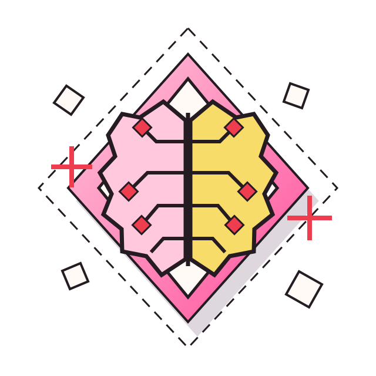

Artificial Intelligence
How It Is
Changing
Our Lives

✦ ✦I think AI is one of the most important technologies today because it is changing the way we study, work, and communicate.
What Is
Artificial Intelligence?
Artificial intelligence, also called AI, is a type of technology that allows computers to do things that normally require human intelligence. For example, AI can answer questions, recognize images, solve problems, and create text or pictures.
AI works by learning patterns from large amounts of information. This helps it understand what we are asking and give us answers. However, AI is not always correct, and it does not think exactly like a human.
Today, AI is part of our everyday lives, even when we do not notice it. For example, Netflix uses AI to recommend movies, Google Maps helps us find the best routes, and ChatGPT can help us answer questions or understand topics.
What Are the
Benefits of AI?
One of the biggest benefits of AI is that it can make our lives easier and save us time. It can help us complete tasks faster, find information, and come up with new ideas.
As a university student, I use AI to help me study, understand difficult topics, and organize my ideas. For example, when I do not understand something from class, I can ask ChatGPT to explain it using simpler words. This helps me learn and feel more prepared.
AI is also useful in many different jobs. In marketing, it can help create ideas for campaigns, write content, and understand what customers like. In healthcare, AI can help doctors study medical images and notice possible health problems.
Another benefit is that AI can help people with disabilities. For example, automatic subtitles and voice recognition can make communication easier.
“I think the best thing about AI is that it can support people in their everyday lives. However, we should use it as a tool and not depend on it for everything.”
What Are the
Risks and Challenges of AI?
Even though AI has many benefits, it also has some important risks.
One problem is that AI can make mistakes. Sometimes it gives information that sounds correct but is actually wrong. This is why we should always check important information instead of believing everything AI tells us.
Another problem is privacy. When people share personal information with AI, they might not know how that information is being used or stored.
AI can also be biased. Since it learns from information created by humans, it can sometimes repeat unfair ideas or stereotypes.
I also think depending too much on AI can become a problem, especially for students. If we use it to do all our work, we might stop thinking for ourselves or developing important skills.
What Could the
Future of AI Look Like?
I believe AI will continue growing and becoming more important in our lives. In the future, it could help us with even more things, such as improving education, making healthcare faster, and helping businesses work better.
However, there are also challenges we need to think about.
One important challenge is electricity. AI needs large data centers to work, and these use a lot of energy. According to the International Energy Agency, electricity used by data centers could more than double by 2030.
If electricity demand grows too quickly, it could put pressure on power systems and increase the risk of electricity problems or blackouts in some places.
Another problem is that many people and companies depend on online services. If an important system stops working, it can affect many users at the same time.
For example, a Cloudflare outage in December 2025 affected access to different websites and online services. This shows how dependent we have become on technology.
I think humans should always have some control over AI, especially when it is used for important decisions. AI can help us, but people should still be responsible for checking its work and making final decisions.
“In my opinion, the future of AI has many opportunities, but we need to use it carefully and responsibly.”
How This
Website Was Made
For this website, I wanted to explain artificial intelligence in a simple and interesting way so that anyone could understand it.
First, I organized the information into different sections. I decided to start by explaining what AI is, then talk about its benefits, risks, and what its future could look like. I also included real examples because I think they make the information easier to understand.
For the design, I wanted the website to look modern, clean, and easy to use. I chose simple colors, clear titles, and a layout that makes the information easy to read.
I used HTML to organize the content, CSS to design the website, and JavaScript for interactive elements, such as buttons.
After creating the website, I checked that everything worked correctly and that the text and design looked good on different screen sizes.
I also used AI to help me organize my ideas, correct grammar, and make some explanations easier to understand. However, I checked important information using reliable sources.
My main goal was to make a website that is easy to explore and helps people understand AI better.
Conclusion
Artificial intelligence is already changing our everyday lives, and I think it will become even more important in the future.
It can help us study, work, and solve problems, but it also has risks that we should understand.
For me, the most important thing is finding a balance. AI should help us make our lives easier, but we should still think for ourselves and stay in control of how we use it.